Bancos de dados de informação proteica
Objetivos
- Usar os diferentes bancos de dados de informação de proteínas.
- Caracterizar proteínas desconhecidas utilizando não apenas a sequência, mas perfis, motivos e domínios.
- Obter informações sobre a família de uma determinada proteína.
- Obter alinhamentos e matrizes de posicionamento específicas para uma família de proteínas.
- Verificar alergenicidade em proteínas.
- Verificar regiões de determinada proteína que podem ser epitopos para células B e T.
Observação:
- Este tutorial foi construído apenas para fins didáticos. A reprodução dele para qualquer outro fim não é permitida e nem consentida.
Identificação de Proteínas utilizando o UniPROT
O UniProt é uma base de conhecimento de referência para a obtenção de informação de proteínas, com links e informações cruzadas para diversos outros bancos de dados. É normalmente nele que as primeiras informações de uma determinada proteína são obtidas.
Quando utilizar o Uniprot?
- Para obter informações gerais sobre uma proteína.
- Registro de anotação mais completo para proteínas únicas.
- Swiss-Prot: proteínas anotadas e revisadas, com intervenção humana.
- Para realizar busca de similaridade com proteínas conhecidas.
- Encontrar homólogos curados e já confirmados experimentalmente.
- Encontrar dados relacionados a mutantes naturais e variações associadas a doenças ou fenótipos alterados.
- Obter informações sobre a estrutura e resíduos importantes para a atividade/função.
Buscas de similiaridade utilizando o BLAST também poderão ser realizadas diretamente no site do UniProt. Vamos a um exemplo?
-
Abrir a Home Page do UNIPROT: http://www.uniprot.org.
-
Clicar no link BLAST (Canto superior esquerdo).
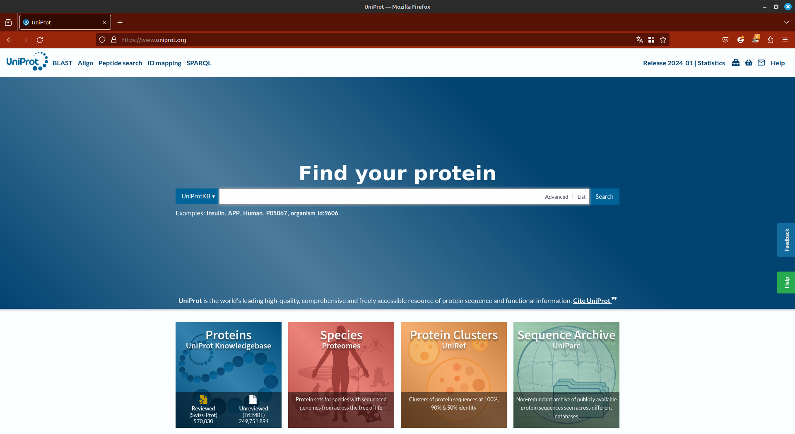
- Copiar e colar a sequência abaixo no campo Query:
>Seq5
MASFTTTTAAAASRLLPSSSSSISRLSLSSSSSSSSSLKCLRSSPLVSHLFLRQRGGSAYVTKTRFSTKC
YASDPAQLKNAREDIKELLQSKFCHPIMVRLGWHDAGTYNKDIKEWPQRGGANGSLSFDVELRHGANAGL
VNALKLLQPIKDKYSGVTYADLFQLASATAIEEAGGPTIPMKYGRVDATGPEQCPEEGRLPDAGPPSPAQ
HLRDVFYRMGLDDKDIVALSGAHTLGRSRPERSGWGKPETKYTKDGPGAPGGQSWTAEWLKFDNSYFKDI
KEKRDADLLVLPTDAALFEDPSFKVYAEKYAADQEAFFKDYAEAHAKLSNQGAKFDPAEGITLNGTPAGA
APEKFVAAKYSSNKRSELSDSMKEKIRAEYEGFGGSPNKPLPTNYFLNIMIVIGVLAVLSYLAGN
-
Clicar em BLAST, e após o aparecimento dos resultados, analisar a tabela de hits (Sequências similares ou iguais presentes no banco de dados).
-
Verificar os 6 primeiros Hits.
-
Clique no primeiro hit e verifique a estrutura das informações contidas no Uniprot.
Obtendo informações sobre estrutura proteíca no UniProt:
Abrir novamente o site do UniProt: http://www.uniprot.org
-
No campo Query, inserir o termo PGH2_MOUSE.
-
Observar os resultados.
-
Em uma outra janela/aba do navegador, na mesma página acima, faça a busca pelo termo GYS2_HUMAN.
-
Observe os resultados e veja a quantidade de informações presentes para estas proteínas.
Importante
O UniProt possui duas formas de especificar o registro de uma proteína: o Entry name e o Accession number. O primeiro é uma forma rápida para memorizar uma determinada entrada, mas não é estável. Já o segundo é estável e é o registro que deve ser utilizado em publicações ou trabalhos científicos. Utilizamos acima o entry name. Mais informações sobre como as informações de um registro do UniProt estão organizadas podem ser obtidas em seu Manual.
Explorando o Protein Data Bank
O RCSB PDB é o principal banco de estruturas de proteínas resolvidas experimentalmente. É dele que retiramos as proteínas molde para realização de modelagem comparativa.
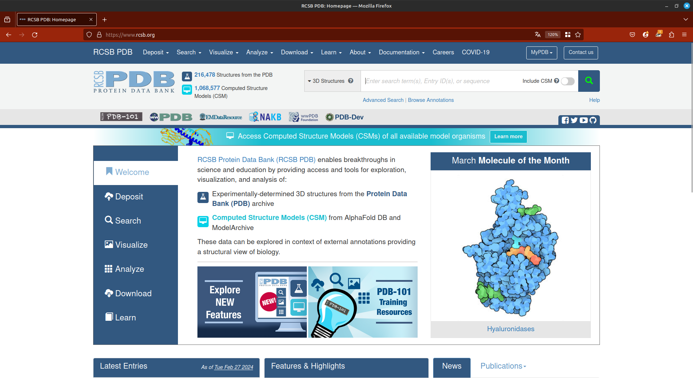
Quando utilizar o PDB?
- Para obter estruturas de proteínas resolvidas experimentalmente.
- Para obter informações estruturais sobre uma proteína.
- Para verificar e encontrar estruturas proteicas homólogas.
- Para obter informações sobre sítios importantes para a atividade enzimática.
- Obter informações sobre os ligantes das proteínas.
Vamos agora verificar o registro de uma entrada no banco PDB:
- Abrir a Home Page do Protein Data Bank (PDB): http://rcsb.org
- No campo “PDB ID or Text” insira o termo: 3HTB
-
A partir da página aberta, obter as seguintes informações:
-
Identificação da Proteína.
- Organismo Fonte.
- Número de Cadeias Polipeptídicas.
- Método Experimental pelo qual o modelo foi obtido.
- Outras estruturas relacionadas.
- Mutações encontradas (se existirem).
- Clicar na estrutura e observar o modelo 3D utilizando a ferramenta Jmol.
O registro de uma estrutura no banco PDB está sempre vinculado a um Accession number desta proteína no UniProt. Portanto, ao abrir o registro a partir do código PDB, um link direto para o registro no UniProt estará descrito abaixo da parte Macromolecules.
Existe um arquivo que é frequentemente atualizado que faz a indexação entre os Uniprot Accession number e o código PDB de uma proteína no Protein Databank. Utilizando linguagens de script ou até mesmo comandos "Localizar/Buscar" em programas de edição de texto, você rapidamente faz um levantamento das estruturas experimentalmente resolvidas de uma proteína com o Accession number do Uniprot.
Identificando os domínios de uma proteína
Vamos agora identificar a arquitetura dos domínios que esta proteína abaixo possui e a família a qual pertence.
>1smd
GRTSIVHLFEWRWVDIALECERYLAPKGFGGVQVSPPNENVAIHNPFRPWWERYQPVSYK
LCTRSGNEDEFRNMVTRCNNVGVRIYVDAVINHMCGNAVSAGTSSTCGSYFNPGSRDFPA
VPYSGWDFNDGKCKTGSGDIENYNDATQVRDCRLSGLLDLALGKDYVRSKIAEYMNHLID
IGVAGFRIDASKHMWPGDIKAILDKLHNLNSNWFPEGSKPFIYQEVIDLGGEPIKSSDYF
GNGRVTEFKYGAKLGTVIRKWNGEKMSYLKNWGEGWGFMPSDRALVFVDNHDNQRGHGAG
GASILTFWDARLYKMAVGFMLAHPYGFTRVMSSYRWPRYFENGKDVNDWVGPPNDNGVTK
EVTINPDTTCGNDWVCEHRWRQIRNMVNFRNVVDGQPFTNWYDNGSNQVAFGRGNRGFIV
FNNDDWTFSLTLQTGLPAGTYCDVISGDKINGNCTGIKIYVSDDGKAHFSISNSAEDPFI
AIHAESKL
Para isto, iremos utilizar primeiramente o banco CDD (Conserved Domain Databases), o qual é vinculado ao NCBI. A ferramenta que faz esta identificação é o SPARCLE (Subfamily Protein Architecture Labeling Engine), que é um recurso que caracteriza funcionalmente e rotula sequências de proteínas que foram agrupadas por sua arquitetura de domínio conservado. Uma arquitetura de domínio é definida como a ordem sequencial de domínios conservados numa sequência de proteínas (CDD-NCBI).
Quando usar o CDD?
- Para procurar domínios conservados de proteínas.
- Encontrar informações sobre famílias de proteínas.
- Inclusive superfamílias e subfamílias.
- Para obter matrizes PSSM específicas para cada família de proteína.
- Para obter alinhamentos entre representantes de cada família.
- Entre os mais distantes e os mais representativos.
- Verificar relações de proximidade entre as famílias proteicas.
A utilização do SPARCLE pode ser realizada de duas maneiras: a partir de uma sequência de aminoácidos ou por uma palavra-chave. Para utilizar a partir da sequência, utilizaremos o CD-Search:
Abra o CD-Search.
Copie a sequência fasta 1smd na caixa de consulta, como indicado na figura abaixo:
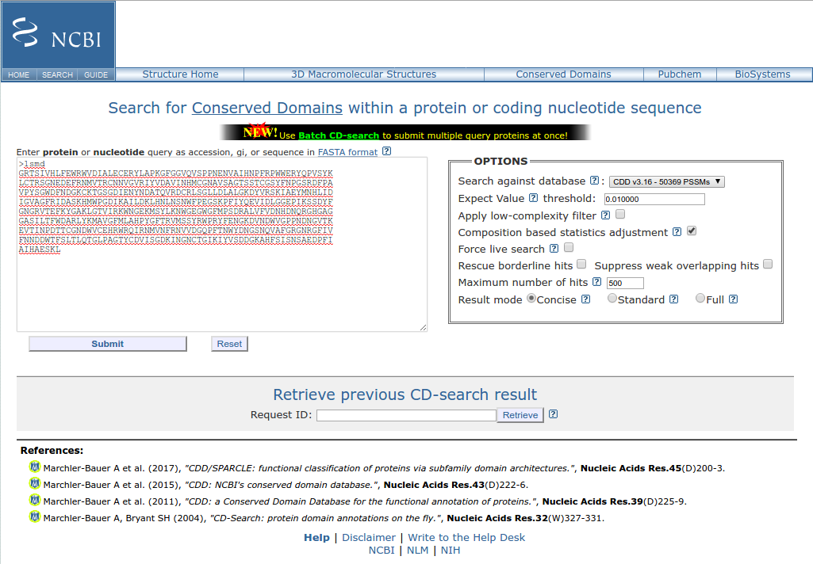
Deixe as opções já marcadas no campo Options. Clique em Submit.
O primeiro resultado que é retornado é uma tela como a seguinte:
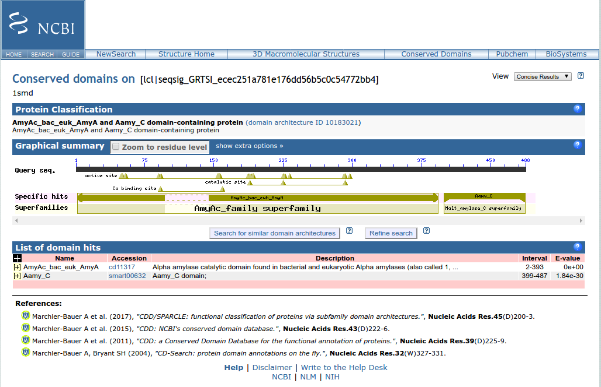
Nesta, podem ser identificados:
- A classificação da proteína (Protein Classification), com o link para o ID da arquitetura do domínio (do SPARCLE).
- A superfamília (Superfamilies) e os hits específicos (Specific hits) dentro desta superfamília.
- Os domínios identificados (Domain hits).
Pergunta: Quantos domínios esta proteína apresenta?
Na lista de domínios clique no primeiro e veja a descrição da família que contém este domínio. É uma tela como a representada abaixo:
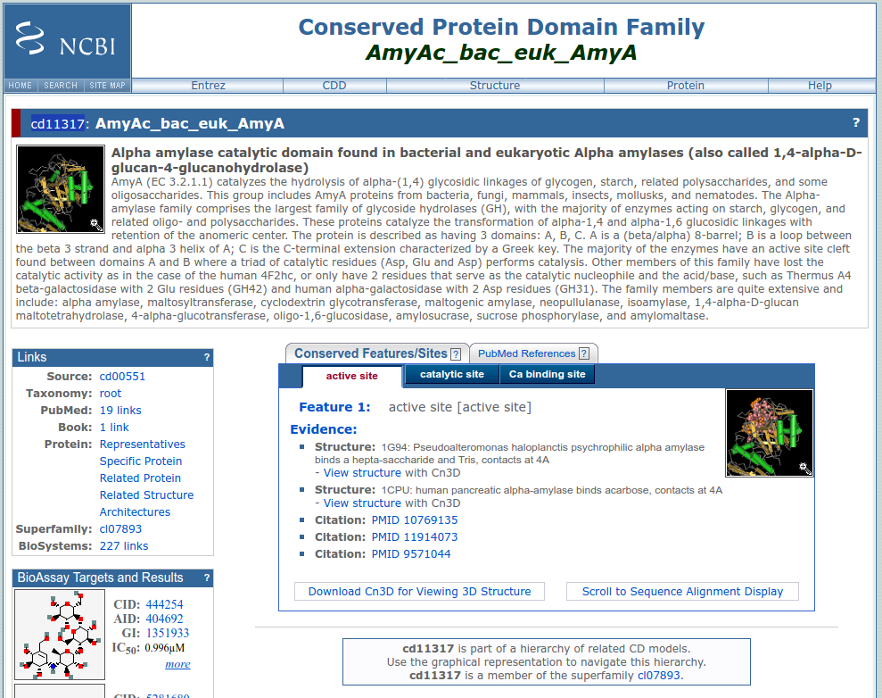
Role esta página até que o alinhamento de proteínas pertencentes a este CD seja mostrado. A opção padrão é o alinhamento dos membros mais diversos (most diverse members), ou seja, aqueles que apresentam sequências menos similares.
Três resíduos (tríade DED) são importantes para a atividade catalítica desta proteína e podem ser evidenciados ao clicar na aba Catalytic Site. Eles serão destacados no alinhamento obtido mais abaixo nesta página.
Podemos afirmar que os resíduos marcados são realmente característicos desta família?
Sim. Isto pode ser verificado ao clicar em catalytic site, na caixa Conserved Features/Sites.
O código da matriz de escores de posicionamento específico (PSSM) para esta família pode ser obtida na caixa Statistics, presente na lateral esquerda.
Usando o InterPro
O Pfam era banco para obtenção de informações, funcionais, de famílias proteicas e domínios. No entanto, ele deixou de ser atualizado e suas funcionalidades (ainda que não completamente) e dados alimentam agora o Interpro. Além da classificação das proteínas em famílias, você poderá também obter modelos HMMs (Hidden Markov Models) para classificação dessas famílias.
HMMs: É um modelo estatístico para qualquer sistema que pode ser representado como uma sucessão de transições entre estados discretos.
Quando usar o Interpro?
- Obter informações de famílias proteicas e domínios.
- Obter informações funcionais.
- Obter alinhamentos múltiplos de sequências de proteínas de uma mesma família.
- Obter perfis (profiles) Hidden Markov Models.
- Obter informações sobre a estrutura e resíduos importantes para a atividade.
- Obter informações ligadas com outros bancos de dados biológicos.
Nesta parte, também utilizaremos a sequência 1smd. Para isso siga os passos abaixo:
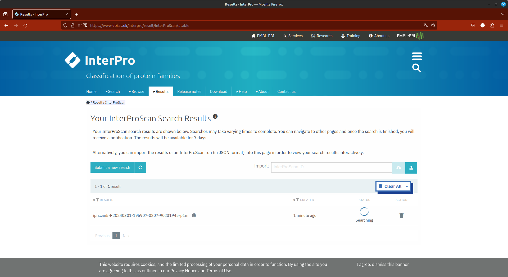
- Abra a página do Interpro.
- Clique em Sequence Search.
- Copie a sequência da proteína
1smdno campo indicado. - Espere os resultados.
A primeira página de resultados será a seguinte:
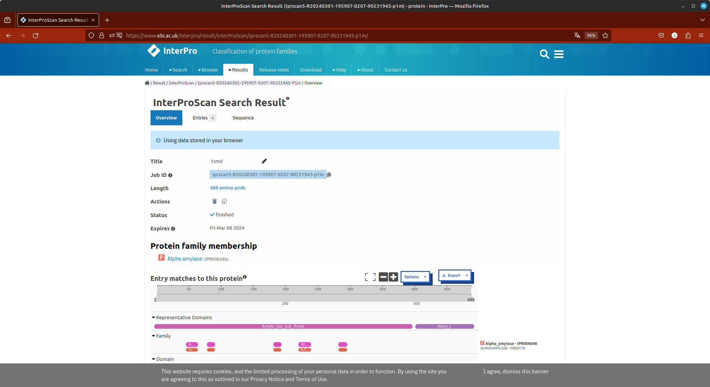
- Clique agora no link correspondente a família das alfa-amilases.
- Observe todos os resultados, clicando no menu de navegação a direita.
- O código InterPro para esta família proteica, que é IPR006046.
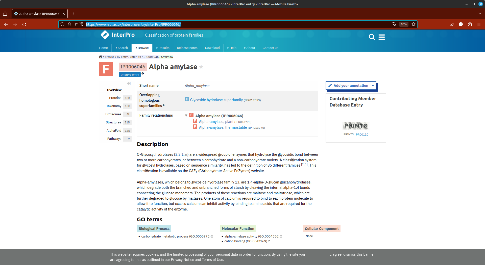
Usando o PROSITE
O banco de dados PROSITE é um outro banco muito útil para obter informações funcionais e de famílias proteicas e domínios.
Quando o usar o PROSITE?
- Para obter informações de famílias proteicas e domínios.
- Para obtenção de informações funcionais.
- Obter as assinaturas de sequência que caracterizam as famílias de proteínas.
- Usar para buscas de similaridade utilizando o PHI-BLAST.
Para este exemplo, iremos utilizar a sequência abaixo:
>Enzyme_Test_1
MVKIVTVKTQAYQDQKPGTSGLRKRVKVFQSSANYAENFIQSIISTVEPAQRQEATLVVGGDGRFYMKEAIQLIARIA
AANGIGRLVIGQNGILSTPAVSCIIRKIKAIGGIILTASHNPGGPNGDFGIKFNISNGGPAPEAITDKIFQISKTIEE
YAVCPDLKVDLGVLGKQQFDLENKFKPFTVEIVDSVEAYATMLRSIFDFSALKELLSGPNRLKIRIDAMHGVVGPYVK
KILCEELGAPANSAVNCVPLEDFGGHHPDPNLTYAADLVETMKSGEHDFGAAFDGDGDRNMILGKHGFFVNPSDSVAV
IAANIFSIPYFQQTGVRGFARSMPTSGALDRVASATKIALYETPTGWKFFGNLMDASKLSLCGEESFGTGSDHIREKD
GLWAVLAWLSILATRKQSVEDILKDHWQKYGRNFFTRYDYEEVEAEGANKMMKDLEALMFDRSFVGKQFSANDKVYTV
EKADNFEYSDPVDGSISRNQGLRLIFTDGSRIVFRLSGTGSAGATIRLYIDSYEKDVAKINQDPQVMLAPLISIALKV
SQLQERTGRTAPTVIT
Passo a Passo
- Abra a página inicial do PROSITE.
- Na caixa Quick Scan mode of ScanProsite, cole a sequência acima.
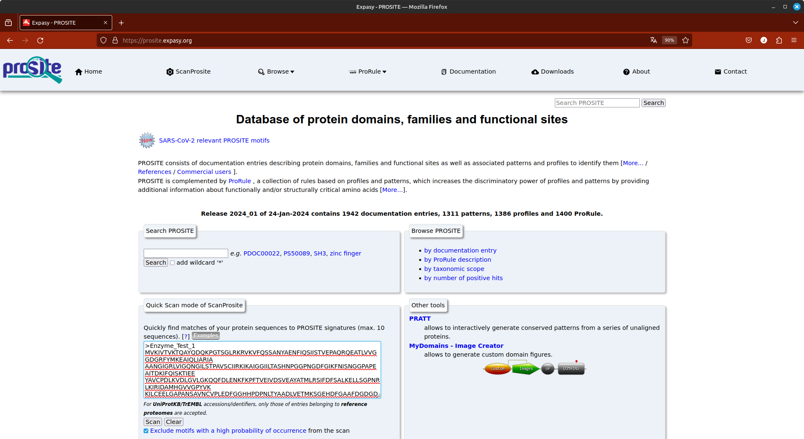
- Marque a opção Exclude motifs with a high probability of occurrence from the scan.
Esta opção serve para excluir motivos lineares na sequência proteica que são muito comuns, em inúmeras proteínas.
- Clique em Scan.
- Observe os resultados, que devem estar de acordo com a figura abaixo:
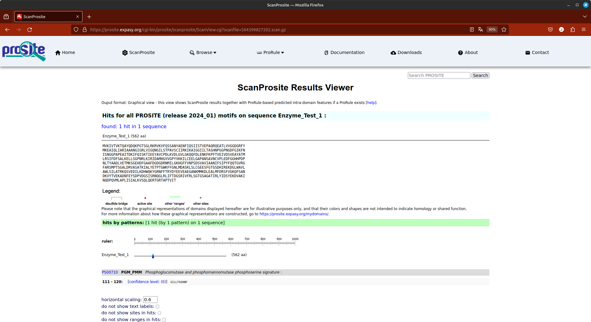
Os resultados mostram que entre as posições 111 e 120 há a assinatura de enzimas do tipo fosfoglucomutase e fosfomannomutase fosfoserine. Clique no link indicado acima (PS00710) e veja as informações deste motivo.
Nesta mesma página, mais abaixo, temos um quadro denominado PGM_PMM, PS00710; Phosphoglucomutase and phosphomannomutase phosphoserine signature (PATTERN). Nele temos o seguinte consenso padrão:
Consensus pattern:
[GSA]-[LIVMF]-x-[LIVM]-[ST]-[PGA]-S-H-[NIC]-P
Esta é assinatura PROSITE deste tipo de proteínas. Ela pode ser usada em uma busca PHI-BLAST (ver tutorial Buscas de Similaridade) para identificar proteínas que tenham esta assinatura em buscas de similaridade utilizando o BLAST.
Vamos a um exemplo?
Você quer verificar quais proteínas obtidas a partir de amostras ambientais de metagenomas possuem esta assinatura de fosfoglicomutase, para uma possível aplicação biotecnológica. Para isso, siga os passos abaixo (acompanhe também pela figura):
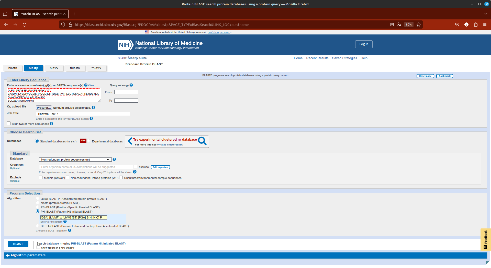
- Utilize o BLASTp, para executar uma busca contra o banco env_nr (Metagenomic proteins). Não esqueça de colar a sequência
Enzyme_Test_1no campo de busca. - Na seção Program Selection selecione PHI-BLAST. Ao clicar em PSI-BLAST, uma caixa abaixo é aberta. Nela você insere a assinatura PROSITE acima.
- Clique em BLAST e espere os resultados (Pode demorar!!!).
- Verifique os resultados.
Pelos resultados, há algo promissor para aplicação?
Qual banco utilizar?
Esta não é uma pergunta trivial. É importante que você explore as informações disponíveis em cada banco e extraia o máximo de informações sobre a proteína de interesse. Como pode ser notado, embora exista uma redundância nas informações disponíveis, cada banco tem sua especificidade e particularidade.